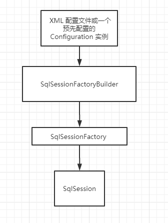
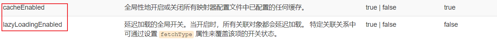
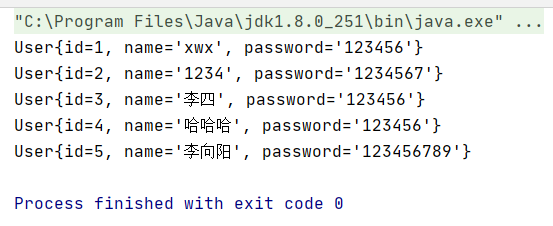
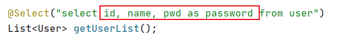
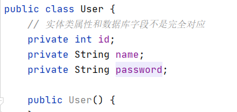

简介
MyBatis 是一款优秀的持久层框架
它支持自定义 SQL、存储过程以及高级映射。
MyBatis 免除了几乎所有的 JDBC 代码以及设置参数和获取结果集的工作。
MyBatis 可以通过简单的 XML 或注解 来配置和映射原始类型、接口和 Java POJO（Plain Old Java Objects，普通老式 Java 对象）为数据库中的记录。
中文文档：https://mybatis.org/mybatis-3/zh/getting-started.html
每个基于 MyBatis 的应用都是以一个 SqlSessionFactory 的实例为核心的。
SqlSessionFactory 的实例可以通过 SqlSessionFactoryBuilder 获得。
而 SqlSessionFactoryBuilder 则可以从 XML 配置文件或一个预先配置的 Configuration 实例来构建出 SqlSessionFactory 实例。

搭建环境 新建基础数据库 1 2 3 4 5 6 7 create database mybatis; use mybatis; create table user( id int(20) not null primary key, name varchar(30) default null, pwd varchar(30) default null )engine=innodb default charset=utf8;
IDEA项目创建 新建maven项目
删除src文件夹（将其作为一个父工程）
在pom.xml文件中添加依赖 依赖去maven仓库找，找个用的人最多的就行。
mybatis依赖
1 2 3 4 5 6 7 <dependency > <groupId > org.mybatis</groupId > <artifactId > mybatis</artifactId > <version > 3.5.3</version > </dependency >
较为全面的依赖：
1 2 3 4 5 6 7 8 9 10 11 12 13 14 15 16 17 18 19 20 21 22 <dependencies > <dependency > <groupId > mysql</groupId > <artifactId > mysql-connector-java</artifactId > <version > 8.0.20</version > </dependency > <dependency > <groupId > org.mybatis</groupId > <artifactId > mybatis</artifactId > <version > 3.5.2</version > </dependency > <dependency > <groupId > junit</groupId > <artifactId > junit</artifactId > <version > 4.12</version > <scope > test</scope > </dependency > </dependencies >
配置资源导出，防止资源导出失败，下面这些配置需要放在父工程，如果出现问题，则在相应的子工程也引入即可。
1 2 3 4 5 6 7 8 9 10 11 12 13 14 15 16 17 18 19 20 21 <build > <resources > <resource > <directory > src/main/resources</directory > <includes > <include > **/*.properties</include > <include > **/*.xml</include > </includes > <filtering > true</filtering > </resource > <resource > <directory > src/main/java</directory > <includes > <include > **/*.properties</include > <include > **/*.xml</include > </includes > <filtering > true</filtering > </resource > </resources > </build >
新建一个module 在子项目resources目录下新建配置文件
1 2 3 4 5 6 7 8 9 10 11 12 13 14 15 16 17 18 19 20 21 <?xml version="1.0" encoding="UTF-8" ?> <!DOCTYPE configuration PUBLIC "-//mybatis.org//DTD Config 3.0//EN" "http://mybatis.org/dtd/mybatis-3-config.dtd" > <configuration > <environments default ="development" > <environment id ="development" > <transactionManager type ="JDBC" /> <dataSource type ="POOLED" > <property name ="driver" value ="com.mysql.jdbc.Driver" /> <property name ="url" value ="jdbc:mysql://localhost:3306/mybatis?useSSL=false& useUnicode=true& characterEncoding=UTF-8& serverTimezone=Asia/Shanghai" > <property name ="username" value ="root" /> <property name ="password" value ="123456" /> </dataSource > </environment > </environments > </configuration >
新建一个工具类 1 2 3 4 5 6 7 8 9 10 11 12 13 14 15 16 17 18 19 20 21 22 23 24 25 26 27 28 29 30 31 32 33 34 35 package com.tcmyxc.utils;import org.apache.ibatis.io.Resources;import org.apache.ibatis.session.SqlSession;import org.apache.ibatis.session.SqlSessionFactory;import org.apache.ibatis.session.SqlSessionFactoryBuilder;import java.io.IOException;import java.io.InputStream;public class MybatisUtils private static SqlSessionFactory sqlSessionFactory; static { try { String resource = "mybatis-config.xml" ; InputStream inputStream = Resources.getResourceAsStream(resource); sqlSessionFactory = new SqlSessionFactoryBuilder().build(inputStream); } catch (IOException e) { e.printStackTrace(); } } public static SqlSession getSqlSession () return sqlSessionFactory.openSession(); } }
编写代码
测试 注意点：
org.apache.ibatis.binding.BindingException: Type interface com.tcmyxc.dao.UserDao is not known to the MapperRegistry.
MapperRegistry是什么？
核心配置文件注册mapper !
1 2 3 4 <mappers > <mapper resource ="com/tcmyxc/dao/UserMapper.xml" /> </mappers >
1 2 3 4 5 6 7 8 9 10 11 12 13 14 15 16 17 18 19 20 21 22 23 24 25 26 27 28 29 30 package com.tcmyxc.dao;import com.tcmyxc.pojo.User;import com.tcmyxc.utils.MybatisUtils;import org.apache.ibatis.session.SqlSession;import org.junit.Test;import java.util.List;public class UserDaoTest @Test public void test () SqlSession sqlSession = MybatisUtils.getSqlSession(); UserDao mapper = sqlSession.getMapper(UserDao.class); List<User> userList = mapper.getUserList(); for (User user : userList) { System.out.println(user); } sqlSession.close(); } }
使用mybatis增删改查（增删改需要提交事务）
编写接口
编写对应mapper中的sql语句
注册mapper.xml文件
测试
三个文件依次是接口文件，接口mapper文件，junit测试文件
查询 1 2 User getUserById (int id) ;
1 2 3 4 <select id ="getUserById" parameterType ="int" resultType ="com.tcmyxc.pojo.User" > select * from user where id = #{id} </select >
1 2 3 4 5 6 7 8 9 10 11 12 13 @Test public void getUserById () SqlSession sqlSession = MybatisUtils.getSqlSession(); UserDao mapper = sqlSession.getMapper(UserDao.class); User user = mapper.getUserById(1 ); System.out.println(user); sqlSession.close(); }
增加 1 2 3 int addUser (User user)
1 2 3 4 5 <insert id ="addUser" parameterType ="com.tcmyxc.pojo.User" > insert into user(id, name, pwd) values(#{id}, #{name}, #{pwd}) </insert >
1 2 3 4 5 6 7 8 9 10 11 12 13 14 15 @Test public void addUser () SqlSession sqlSession = MybatisUtils.getSqlSession(); UserDao mapper = sqlSession.getMapper(UserDao.class); mapper.addUser(new User(4 , "哈哈哈" , "123456" )); sqlSession.commit(); sqlSession.close(); }
删除 1 2 3 4 <delete id ="delUserById" parameterType ="int" > delete from user where id = #{id} </delete >
更新 1 2 3 4 <update id ="updateUser" parameterType ="com.tcmyxc.pojo.User" > update user set pwd = #{pwd}, name = #{name} where id = #{id} </update >
万能的Map 假设，实体类中或者数据库中字段过多，要考虑使用map
野路子，最万能！
1 2 // 万能的map User getUserById2(Map<String, Object> map);
1 2 3 4 <select id ="getUserById2" parameterType ="map" resultType ="com.tcmyxc.pojo.User" > select * from user where id = #{userId} </select >
1 2 3 4 5 6 7 8 9 10 11 12 13 14 @Test public void getUserById2 () SqlSession sqlSession = MybatisUtils.getSqlSession(); UserDao mapper = sqlSession.getMapper(UserDao.class); Map<String, Object> map = new HashMap<>(); map.put("userId" , 1 ); User user = mapper.getUserById2(map); System.out.println(user); sqlSession.close(); }
Map传递参数，直接在sql中取出key即可！
对象传递参数，直接在sql中取对象的属性即可！
只有一个基本参数类型的情况，可以省略parameterType
模糊查询 1 2 3 4 <select id ="getUserLike" parameterType ="String" resultType ="com.tcmyxc.pojo.User" > select * from user where name like #{key} </select >
1 2 3 4 5 6 7 8 9 10 11 12 13 @Test public void getUserLike () SqlSession sqlSession = MybatisUtils.getSqlSession(); UserDao mapper = sqlSession.getMapper(UserDao.class); List<User> userList = mapper.getUserLike("%李%" ); for (User user : userList) { System.out.println(user); } sqlSession.close(); }
配置解析 MyBatis 的配置文件包含了会深深影响 MyBatis 行为的设置和属性信息
环境配置（environments）
MyBatis 可以配置成适应多种环境
尽管可以配置多个环境，但每个 SqlSessionFactory 实例只能选择一种环境。
事务管理器（transactionManager）
在 MyBatis 中有两种类型的事务管理器（也就是 type=”[JDBC|MANAGED]”）
数据源（dataSource）
dataSource 元素使用标准的 JDBC 数据源接口来配置 JDBC 连接对象的资源。
有三种内建的数据源类型（也就是 type=”[UNPOOLED|POOLED|JNDI]”）
映射器（mappers） 【推荐使用resource方式引用】
告诉 MyBatis 到哪里去找映射文件
可以使用：
相对于类路径的资源引用
完全限定资源定位符（包括 file:/// 形式的 URL）
类名和包名
使用class文件和包扫描绑定注册注意点 ：
接口和mapper文件必须同名！
接口和mapper文件必须在同一个包下！
属性（properties） 属性可以在外部进行配置，并可以进行动态替换
优先级：命令行>外部文件>内部
加载机制：
首先读取在 properties 元素体内指定的属性。
然后根据 properties 元素中的 resource 属性读取类路径下属性文件，或根据 url 属性指定的路径读取属性文件，并覆盖之前读取过的同名属性。
最后读取作为方法参数传递的属性，并覆盖之前读取过的同名属性。
使用步骤：
1、先编写一个db.properties
1 2 3 4 driver =com.mysql.cj.jdbc.Driver url =jdbc:mysql://localhost:3306/mybatis?useSSL=false&useUnicode=true&characterEncoding=UTF-8&serverTimezone=Asia/Shanghai username =root password =123456
2、在核心配置文件中引入
1 2 3 4 <properties resource ="db.properties" > <property name ="username" value ="root" /> </properties >
或者根据url引入
【易错点】
#{} 是占位符
**$()**是直接字符替换，不安全，有注入风险
类型别名（typeAliases）
为 Java 类型设置一个缩写名字。
它仅用于 XML 配置，意在降低冗余的全限定类名书写
1 2 3 <typeAliases > <typeAlias type ="com.tcmyxc.pojo.User" alias ="User" /> </typeAliases >
1 2 3 <select id ="getUserList" resultType ="User" > select id, name, pwd as password from user </select >
也可以指定一个包名，MyBatis 会在包名下面搜索需要的 Java Bean，比如：
1 2 3 <typeAliases > <package name ="com.tcmyxc.pojo" /> </typeAliases >
扫描实体类的包，它的默认别名就是这个类的类名，首字母小写（实际上也可以大写，但推荐小写）！
在没有注解的情况下，会使用 Bean 的首字母小写的非限定类名来作为它的别名
——官方原话
实体类较少，使用第一种。
如果实体类较大，使用第二种。
第二种可以直接定制化，第二种可以使用注解的方式定制名字
1 2 3 4 5 6 @Alias("hello") public class User private int id; private String name; private String password; ...
1 2 3 <select id ="getUserList" resultType ="hello" > select id, name, pwd as password from user </select >
设置（settings） 
生命周期
不同作用域和生命周期类别是至关重要的，因为错误的使用会导致非常严重的并发问题
SqlSessionFactoryBuilder
一旦创建了 SqlSessionFactory，就不再需要它了
局部变量
SqlSessionFactory
可以认为是数据库连接池
SqlSessionFactory 一旦被创建就应该在应用的运行期间一直存在，没有任何理由丢弃它或重新创建另一个实例
最佳实践是在应用运行期间不要重复创建多次，浪费资源！
因此 SqlSessionFactory 的最佳作用域是应用作用域
最简单的就是使用单例模式 或者静态单例模式
SqlSession
连接到连接池的一个请求
SqlSession 的实例不是线程安全的，因此是不能被共享的，所以它的最佳的作用域是请求或方法作用域
用完之后需要赶紧关闭，否则资源被占用
这里面每一个mapper就是一个业务。
解决实体类的属性名和数据库字段名不一致的问题
测试结果：
解决方案一：起别名 1 2 3 <select id ="getUserList" resultType ="user" > select id, name, pwd as password from user </select >
方案二：结果集映射 1 2 数据库字段：id name pwd 实体属性值：id name password
1 2 3 4 5 6 7 <resultMap id ="UserMap" type ="user" > <result property ="password" column ="pwd" /> </resultMap > <select id ="getUserList" resultMap ="UserMap" > select * from user </select >

日志——log4j 如果数据库操作出现异常，我们需要排错，日志就是最好的助手！
曾经：sout，debug
现在：日志工厂
SLF4J
LOG4J【掌握】
LOG4J2
JDK_LOGGING
COMMONS_LOGGING
STDOUT_LOGGING【标准日志输出，不需要引包，掌握】
NO_LOGGING
log4j是什么？
Log4j是Apache 的一个开源项目
使用Log4j，可以控制日志信息输送的目的地是控制台 、文件、GUI 组件，甚至是套接口服务器、NT 的事件记录器、UNIX Syslog 守护进程 等
可以控制每一条日志的输出格式
通过定义每一条日志信息的级别，我们能够更加细致地控制日志的生成过程。
这些可以通过一个配置文件 来灵活地进行配置，而不需要修改应用的代码。
使用步骤如下：
在pom.xml中添加依赖 1 2 3 4 5 6 <dependency > <groupId > log4j</groupId > <artifactId > log4j</artifactId > <version > 1.2.12</version > </dependency >
配置log4j.properties文件 1 2 3 4 5 6 7 8 9 10 11 12 13 14 15 16 17 18 19 20 21 22 23 24 log4j.rootLogger = DEBUG,Console,File log4j.appender.Console =org.apache.log4j.ConsoleAppender log4j.appender.Console.Target =System.out log4j.appender.Console.Threshold =DEBUG log4j.appender.Console.layout =org.apache.log4j.PatternLayout log4j.appender.Console.layout.ConversionPattern =[%d{yy/MM/dd HH:mm:ss:SSS}]-%l:%m%n log4j.appender.File =org.apache.log4j.RollingFileAppender log4j.appender.File.File =./log/app.log log4j.appender.File.MaxFileSize =10MB log4j.appender.File.Threshold =DEBUG log4j.appender.File.layout =org.apache.log4j.PatternLayout log4j.appender.File.layout.ConversionPattern =[%p][%d{yyyy-MM-dd HH\:mm\:ss,SSS}][%c]%m%n log4j.logger.org.mybatis =DEBUG log4j.logger.org.java.sql =DEBUG log4j.logger.org.java.sql.Statement =DEBUG log4j.logger.org.java.sql.ResultSet =DEBUG log4j.logger.org.java.sql.PreparedStatement =DEBUG
其实这就已经配置好了 ！！！是不是很惊喜！！！
简单使用 1、在要使用log4j的类中导包
2、生成一个日志对象，参数为当前类的class
1 2 3 4 5 6 7 8 9 static Logger logger = Logger.getLogger(UserMapper.class); @Test public void testLog4j () logger.info("info:进入了testLog4j方法" ); logger.debug("debug:进入了testLog4j方法" ); logger.error("error:进入了testLog4j方法" ); }
分页 思考：为什么使用分页？
使用limit分页
新建一个子项目
写核心配置文件
写工具类
写接口
写mapper.xml文件
注册mapper.xml
测试
1 2 3 select * from user limit startIndex,pageSize 开始的下标，每页的数量
使用RowBounds分页
1 2 3 4 5 6 7 8 9 10 11 12 13 14 15 16 17 18 19 20 @Select("select * from user") List<User> getUserListByRowBounds () ;@Test public void getUserListByRowBounds () SqlSession sqlSession = MybatisUtils.getSqlSession(); RowBounds rowBounds = new RowBounds(0 , 3 ); List<User> users = sqlSession.selectList("com.tcmyxc.dao.UserMapper.getUserListByRowBounds" , null , rowBounds); for (User user : users) { System.out.println(user); } sqlSession.close(); }
使用注解开发 1、注解在接口上实现
2、在核心配置文件绑定接口
3、本质是反射机制实现，底层是动态代理
面向接口编程 如果依赖于抽象类来定义行为，往往导致过于复杂的继承关系，而通过接口定义行为能够更有效地分离行为与实现，为代码的维护和修改带来方便。
关于接口的理解：
接口从更深层次的理解，应是定义（规范，约束）与实现（名实分离的原则）的分离。
接口的本身反映了系统设计人员对系统的抽象理解。
接口应有两类：
第一类是对一个个体的抽象，它可对应为一个抽象体(abstract class)；
第二类是对一个个体某一方面的抽象，即形成一个抽象面（interface）；
一个体有可能有多个抽象面。
抽象体与抽象面是有区别的。
interface在某些地方和abstract有相似的地方，但是采用哪种方式来声明类主要参照以下两点：
如果要创建不带任何方法定义和成员变量 的基类，那么就应该选择接口而不是抽象类。
如果知道某个类应该是基类，那么第一个选择的应该是让它成为一个接口，只有在必须要有方法定义和成员变量 的时候，才应该选择抽象类 。因为抽象类中允许存在一个或多个被具体实现的方法，只要方法没有被全部实现该类就仍是抽象类。
使用过程 新建工具类，实体类 只需要写接口，不需要UserMapper.xml文件
1 2 3 4 5 public interface UserMapper { @Select("select * from user") List<User > getUserList(); }
在核心配置文件mybatis-config.xml文件中注册接口（使用类名注册） 1 2 3 4 <mappers > <mapper class ="com.tcmyxc.dao.UserMapper" /> </mappers >
测试 1 2 3 4 5 6 7 8 9 10 11 12 @Test public void getUserList () SqlSession sqlSession = MybatisUtils.getSqlSession(); UserMapper mapper = sqlSession.getMapper(UserMapper.class); List<User> userList = mapper.getUserList(); for (User user : userList) { System.out.println(user); } sqlSession.close(); }
注意错误点：属性和字段不一致的问题比较烦人（可以使用笨方法）

所以稍微复杂的还是XML来吧
注意点：
Mybatis详细执行流程 使用注解完成CRUD 我们可以在工具类创建的时候实现自动提交事务！但是尽量不要自动提交 ！
1 2 3 4 public static SqlSession getSqlSession () return sqlSessionFactory.openSession(true ); }
@Param("param")注解问题
基本类型的参数或者String类型，需要加上
引用类型不需要加
单个基本类型，参数可不写
多个参数必须写
参数取的时候取得是注解里面的参数！
几种错误情况：
1、错误1

修改成下面即可：
1 2 3 4 5 6 7 8 9 10 11 @Test public void insertUser2 () SqlSession sqlSession = MybatisUtils.getSqlSession(); UserMapper mapper = sqlSession.getMapper(UserMapper.class); int res = mapper.insertUser2(new User(11 , "哈哈哈" , "234t" )); if (res > 0 ) { System.out.println("插入成功！" ); } sqlSession.close(); }
【注意】我们必须要将接口注册到核心配置文件
#{} 和${}区别
默认情况下，使用 #{} 参数语法时，MyBatis 会创建 PreparedStatement 参数占位符，并通过占位符安全地设置参数（就像使用 ? 一样）。 这样做更安全，更迅速，通常也是首选做法
${column} 会被直接替换，用作语句参数是不安全的，会导致潜在的 SQL 注入攻击。因此，要么不允许用户输入这些字段，要么自行转义并检验这些参数。
一对多和多对一 一个老师，多个学生
1 2 3 4 5 6 7 8 9 10 11 12 13 14 15 16 17 18 19 20 21 create table teacher( id int(10) not null, name varchar(30) default null, primary key(id) )engine=innodb default charset=utf8 insert into teacher values (1, '徐老师'); create table student( id int(10) not null, name varchar(30) default null, tid int(10) default null, primary key (id), foreign key (tid) references teacher (id) )engine=innodb default charset=utf8 insert into student values (1, '张三', 1); insert into student values (2, '李四', 1); insert into student values (3, '王五', 1); insert into student values (4, '赵六', 1); insert into student values (5, '秦七', 1);
测试环境搭建：
建数据库
新建老师，同学实体类
建立mapper接口
建立mapper.xml文件
注册mapper.xml文件
测试
查询所有的学生以及学生老师的信息 按照结果处理
1 2 3 4 5 6 7 8 9 10 11 12 13 14 <select id ="getStudentList" resultMap ="StudentTeacher" > select s.id as sid, s.name as sname, t.id as tid, t.name as tname from student as s, teacher as t where s.tid = t.id </select > <resultMap id ="StudentTeacher" type ="Student" > <result column ="sid" property ="id" /> <result column ="sname" property ="name" /> <association property ="teacher" javaType ="Teacher" > <result column ="tid" property ="id" /> <result column ="tname" property ="name" /> </association > </resultMap >
1 2 3 4 5 6 7 8 9 10 11 @Test public void getStudentList () SqlSession sqlSession = MybatisUtils.getSqlSession(); StudentMapper mapper = sqlSession.getMapper(StudentMapper.class); List<Student> studentList = mapper.getStudentList(); for (Student student : studentList) { System.out.println(student); } sqlSession.close(); }
结果：
查询老师有多少个学生 1 2 3 4 5 6 7 8 9 10 11 12 13 14 15 16 17 18 19 20 21 22 23 24 25 26 27 28 29 30 31 32 33 34 35 <select id ="getTeacher" resultMap ="TeacherStudentMap" > select t.id as tid, t.name as tname, s.id as sid, s.name as sname from teacher as t, student as s where t.id = s.tid and t.id = #{tid} </select > <resultMap id ="TeacherStudentMap" type ="Teacher" > <result column ="tid" property ="id" /> <result column ="tname" property ="name" /> <collection property ="students" ofType ="Student" > <result column ="sid" property ="id" /> <result column ="sname" property ="name" /> </collection > </resultMap >
小结
关联 - association 【多对一】
集合 - collection 【一对多】
javaType 和 ofType
javaType 用来指定实体类中属性的类型
ofType 用来指定到List或者集合中的 pojo 类型
面试高频：
MySql引擎
InnoDB底层原理
索引
索引优化
查询优化
动态SQL语句 根据不同的条件生成不同的SQL语句
if
choose (when, otherwise)
trim (where, set)
foreach
if 有就用，没有就不用
1 2 3 4 5 6 7 8 9 10 <select id ="findActiveBlogLike" resultType ="Blog" > SELECT * FROM BLOG WHERE state = ‘ACTIVE’ <if test ="title != null" > AND title like #{title} </if > <if test ="author != null and author.name != null" > AND author_name like #{author.name} </if > </select >
choose、when、otherwise 传入了 “title” 就按 “title” 查找，传入了 “author” 就按 “author” 查找的情形。若两者都没有传入，就返回标记为 featured 的 BLOG
1 2 3 4 5 6 7 8 9 10 11 12 13 14 15 <select id ="findActiveBlogLike" resultType ="Blog" > SELECT * FROM BLOG WHERE state = ‘ACTIVE’ <choose > <when test ="title != null" > AND title like #{title} </when > <when test ="author != null and author.name != null" > AND author_name like #{author.name} </when > <otherwise > AND featured = 1 </otherwise > </choose > </select >
trim、where、set where 元素
1 2 3 4 5 6 7 8 9 10 11 12 13 14 15 <select id ="findActiveBlogLike" resultType ="Blog" > SELECT * FROM BLOG <where > <if test ="state != null" > state = #{state} </if > <if test ="title != null" > AND title like #{title} </if > <if test ="author != null and author.name != null" > AND author_name like #{author.name} </if > </where > </select >
set 元素可以用于动态包含需要更新的列，忽略其它不更新的列。比如：
1 2 3 4 5 6 7 8 9 10 <update id ="updateAuthorIfNecessary" > update Author <set > <if test ="username != null" > username=#{username},</if > <if test ="password != null" > password=#{password},</if > <if test ="email != null" > email=#{email},</if > <if test ="bio != null" > bio=#{bio}</if > </set > where id=#{id} </update >
这个例子中，set 元素会动态地在行首插入 SET 关键字，并会删掉额外的逗号（这些逗号是在使用条件语句给列赋值时引入的）。
foreach 动态 SQL 的另一个常见使用场景是对集合进行遍历（尤其是在构建 IN 条件语句的时候）。比如：
1 2 3 4 5 6 7 8 9 <select id ="selectPostIn" resultType ="domain.blog.Post" > SELECT * FROM POST P WHERE ID in <foreach item ="item" index ="index" collection ="list" open ="(" separator ="," close =")" > #{item} </foreach > </select >
foreach 元素的功能非常强大，它允许你指定一个集合，声明可以在元素体内使用的集合项（item）和索引（index）变量。它也允许你指定开头与结尾的字符串以及集合项迭代之间的分隔符。这个元素也不会错误地添加多余的分隔符，看它多智能！
提示 你可以将任何可迭代对象（如 List、Set 等）、Map 对象或者数组对象作为集合参数传递给 foreach 。当使用可迭代对象或者数组时，index 是当前迭代的序号，item 的值是本次迭代获取到的元素。当使用 Map 对象（或者 Map.Entry 对象的集合）时，index 是键，item 是值。
自定义缓存-ehcache 1 2 3 4 5 6 <dependency > <groupId > org.mybatis.caches</groupId > <artifactId > mybatis-ehcache</artifactId > <version > 1.1.0</version > </dependency >
ehcache.xml
1 2 3 4 5 6 7 8 9 10 11 12 13 14 15 16 17 18 19 20 21 22 23 24 25 26 <?xml version="1.0" encoding="UTF-8"?> <ehcache xmlns:xsi ="http://www.w3.org/2001/XMLSchema-instance" xsi:noNamespaceSchemaLocation ="http://ehcache.org/ehcache.xsd" updateCheck ="false" ><diskStore path ="./tmpdir/Tmp_EhCache" /> <defaultCache eternal ="false" maxElementsInMemory ="10000" overflowToDisk ="false" diskPersistent ="false" timeToIdleSeconds ="1800" timeToLiveSeconds ="259200" memoryStoreEvictionPolicy ="LRU" /><cache name ="cloud_user" eternal ="false" maxElementsInMemory ="5000" overflowToDisk ="false" diskPersistent ="false" timeToIdleSeconds ="1800" timeToLiveSeconds ="1800" memoryStoreEvictionPolicy ="LRU" /></ehcache >
工作中都是用redis！
缓存 默认情况下，只启用了本地的会话缓存，它仅仅对一个会话中的数据进行缓存。 要启用全局的二级缓存，只需要在你的 SQL 映射文件中添加一行：
基本上就是这样。这个简单语句的效果如下:
映射语句文件中的所有 select 语句的结果将会被缓存。
映射语句文件中的所有 insert、update 和 delete 语句会刷新缓存。
缓存会使用最近最少使用算法（LRU, Least Recently Used）算法来清除不需要的缓存。
缓存不会定时进行刷新（也就是说，没有刷新间隔）。
缓存会保存列表或对象（无论查询方法返回哪种）的 1024 个引用。
缓存会被视为读/写缓存，这意味着获取到的对象并不是共享的，可以安全地被调用者修改，而不干扰其他调用者或线程所做的潜在修改。